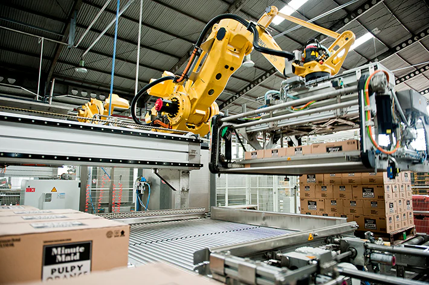

Passionate about web development, electrical solutions, and automation
Learn more about meFrom industrial automation to web development, I’m continuously evolving in the world of technology.
Earned my diploma in Industrial Electricity at Gisenyi Technical Secondary School, gaining expertise in electrical systems and troubleshooting.
Completed the Responsive Web Design certification from FreeCodeCamp, mastering mobile-first layouts, Flexbox, Grid, and accessibility best practices.
Specialized in automated systems, machine operations, and industrial maintenance through CIMA training with GRETA Orléans.
Worked as a Production Operator at LSDH (Laiterie de Saint-Denis-de-l’Hôtel), optimizing automated production lines and gaining hands-on experience in industrial automation.
Learn more about meSpecialized in automated systems, machine operations, and industrial maintenance through CIMA training with GRETA Orléans.
Earned my diploma in Industrial Electricity at Gisenyi Technical Secondary School. During this period, I gained a strong foundation in electrical systems, safety, and hands-on technical skills.
Design and interpret industrial schematics and wiring diagrams.
Install, maintain, and troubleshoot electrical systems and motors.
Perform preventive and corrective maintenance on industrial equipment.
Apply electrical safety procedures and protocols in real environments.
Configure and manage three-phase motors and power systems.
Hands-on training with circuits, relays, and industrial panels.
During my internship at LSDH, I worked as a Line Operator (Pilote de Ligne), gaining hands-on experience in managing automated production lines and ensuring quality output in a fast-paced industrial environment.
Supervised the entire line operation and ensured continuous flow without interruptions.
Performed startup, reset, and shutdown according to industrial safety protocols.
Identified and corrected minor faults to reduce downtime.
Adjusted parameters during product changes for optimal output.
Checked product conformity and eliminated defective items.
Performed cleaning and basic maintenance of the line.
Recorded data such as bottle count, codes, and shift hours.
Collaborated with technicians, supervisors, and maintenance teams.
Followed PPE rules and respected safety standards in production areas.
Click the button below to download my CV:
Download My CVDuring my internship at LSDH as a Production Operator, I had the opportunity to work in an industrial environment, learning how to manage and optimize automated production lines.
Here are some of the key machines I operated during my internship at LSDH.

Forms plastic bottles before filling.

Handles bottle filling and capping.

Applies labels automatically.

Groups bottles into packs.

Stacks packed products onto pallets.
Watch the full process of machines working together during production at LSDH.
| Task | Description | Skills Acquired |
|---|---|---|
| Production Line Monitoring | Ensured smooth operation and detected anomalies. | Attention to detail, problem-solving. |
| Machine Startup & Shutdown | Followed safety procedures to start and stop machines. | Technical knowledge, safety compliance. |
| Machine Adjustments | Modified settings to fit different products. | Precision, adaptability. |
| Quality Control | Checked bottles for defects and ensured compliance. | Quality assurance, attention to detail. |
| Maintenance Support | Collaborated with the maintenance team to resolve issues. | Technical troubleshooting, teamwork. |
This internship provided hands-on experience in an industrial setting. I faced challenges such as understanding specific machine operations and troubleshooting unexpected production issues. However, with guidance from my team, I developed strong analytical and problem-solving skills.
You can download my detailed internship report below:
📄 Download My Internship ReportIf you'd like to connect or collaborate, feel free to reach out!
 Chat with us
Chat with us